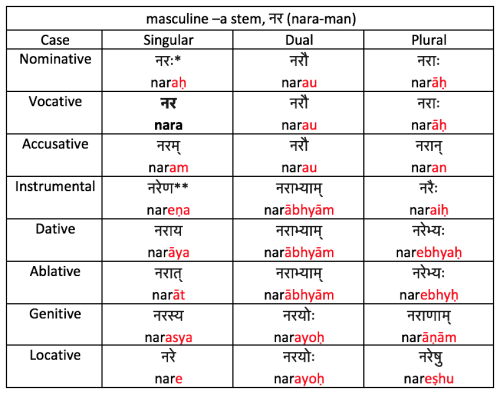
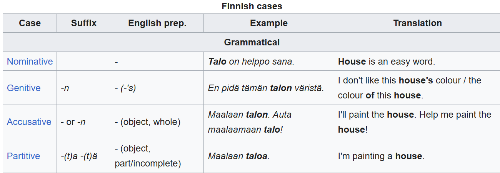

Day 22: Nominals

| Gender | ‘the’ | Comes from | Examples |
|---|---|---|---|
| Human | hu | hût ‘man’ | hût ‘man’, hûtĩ ‘people’, niríθa ‘Nairetha’ |
| Machine | ʈʂa | ʈʂáʈʂ ‘robot’ | ʈʂáʈʂ ‘robot’, ʈʂaq’ʈʂaq’ ‘motor’, ʈʂál ‘pillar’ |
| Neuter | ju | q’aʂ ‘building’, kiʂ ‘eye’, lap’ ‘table’ | |
| Divine | tâ | tâl ‘Lord’ | tâl ‘Lord’, tálu ‘universe’, tâlq’aʂ ‘church’ |
| ‘a …’ | ‘the …’ |
|---|---|
| hût | hu hût |
| ʈʂáʈʂ | ʈʂa ʈʂáʈʂ |
| q’aʂ | ju q’aʂ |
| tâl | tâ tâl |
When are you supposed to use the word whom (vs. who)?
| Latin | English |
|---|---|
| Agricola poetam videt. | ‘The farmer sees the poet.’ |
| Poeta agricolam videt. | ‘The poet sees the farmer.’ |
| Latin | English |
|---|---|
| Agricola poetam videt. | ‘The farmer sees the poet.’ |
| Poeta agricolam videt. | ‘The poet sees the farmer.’ |
| Agricolam poeta videt. | ? |
| Poetam agricola videt. | ? |
| Videt poetam agricola. | ? |
| Latin | English |
|---|---|
| Agricola poetam videt. | ‘The farmer sees the poet.’ |
| Poeta agricolam videt. | ‘The poet sees the farmer.’ |
| Agricolam poeta videt. | ‘The poet sees the farmer.’ |
| Poetam agricola videt. | ‘The farmer sees the poet.’ |
| Videt poetam agricola. | ‘The farmer sees the poet.’ |
| Latin | English |
|---|---|
| Agricola puellam videt. | ‘The farmer sees the girl.’ |
| Puellam agricola videt. | ? |
| Puella agricolam videt. | ? |
| Agricolam puella videt. | ? |
| Videt puellam agricola. | ? |
| Latin | English |
|---|---|
| Agricola puellam videt. | ‘The farmer sees the girl.’ |
| Puellam agricola videt. | ‘The farmer sees the girl.’ |
| Puella agricolam videt. | ‘The girl sees the farmer.’ |
| Agricolam puella videt. | ‘The girl sees the farmer.’ |
| Videt puellam agricola. | ‘The farmer sees the girl.’ |

| Finnish | English |
|---|---|
| Kissa on talossa. | ‘The cat is in the house.’ |
| Kissa on talolla. | ‘The cat is at the house.’ |
| Kissa tulee talosta. | ‘The cat comes out of the house.’ |
| Kissa tulee talolta. | ‘The cat comes from the house.’ |
| Kissa menee taloon. | ‘The cat goes into the house.’ |
| Kissa menee talolle. | ‘The cat goes to the house.’ |
| Meaning | Preposition | Example | Gloss |
|---|---|---|---|
| Location | ul ‘in’ | ul q’aʂ | ‘in the building’ |
| Location | ra ‘at’ | ra lap’ | ‘at the table’ |
| Source | lǎ ‘from’ | lǎ tâlq’aʂ | ‘from the church’ |
| Instrument | wa ‘with’ | wa kiʂ | ‘with an eye’ |
| Possession | ʐa ‘of’ | kiʂ ʐa málʈʂiq | ‘Malchekk’s eye’ |